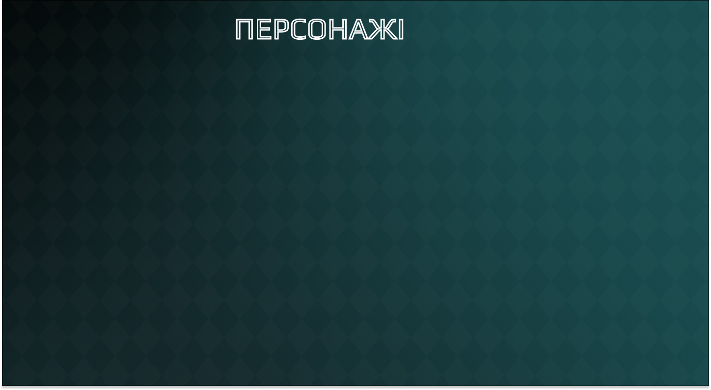
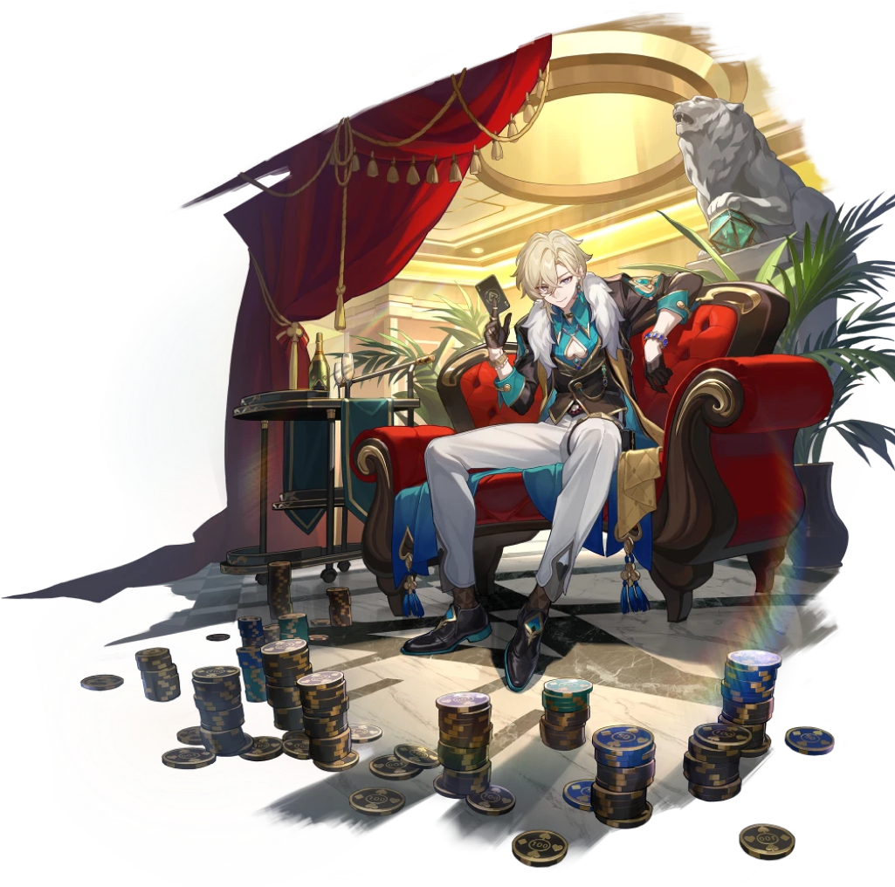
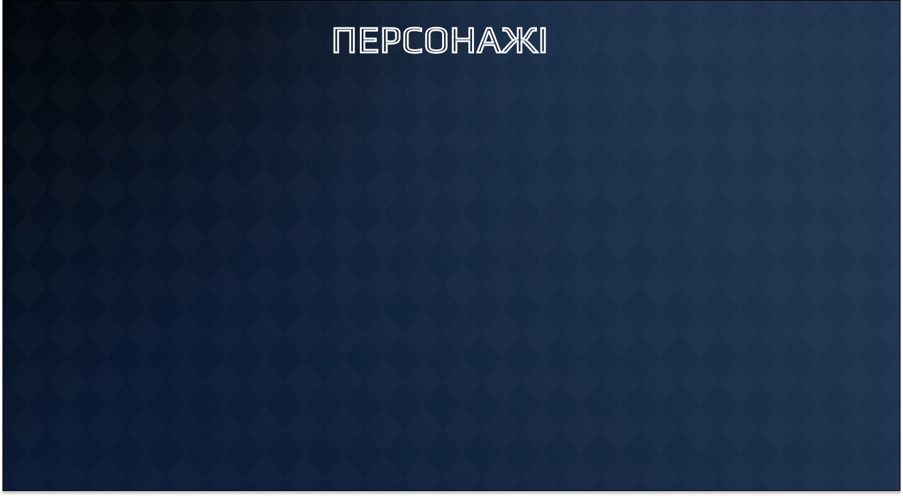
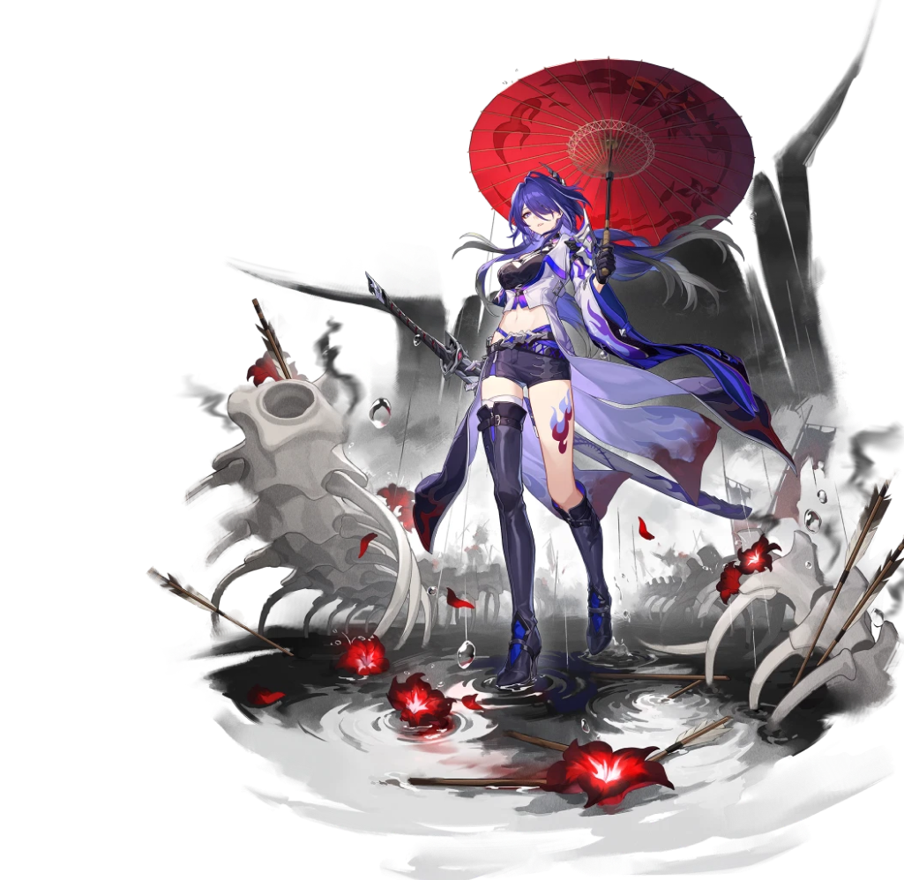
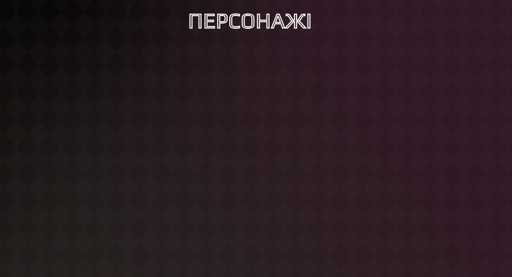
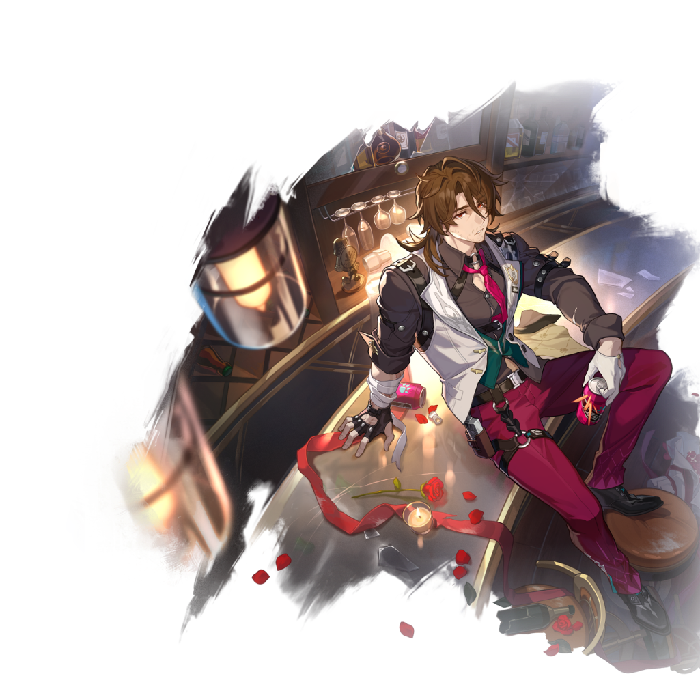

"Honkai: Star Rail" — це китайська мобільна рольова гра, розроблена компанією mihoyo, відомою також за інші популярні ігри, як "Honkai Impact 3rd" та "Genshin Impact". На даний момент працюємо під брендом HoVoverse. Гра поєднує в собі елементи рольових ігор, стратегій та пригодницької історії.
Основна ідея гри полягає в тому, що ви відвідуєте різні місця у грі, відкриваєте нові локації, досліджуєте світ, взаємодієте з різними персонажами, розблоковуєте нові навички та обладнання, і берете участь у різних битвах.
Сюжет гри може бути складним і захоплюючим, де головні герої стикаються з загадковими загрозами, розкривають таємниці світу і борються з міфічними істотами. Гра часто пропонує інтригуючі квести, події та місії, які дозволяють гравцям дізнатися більше про світ "Honkai: Star Rail" і розвивати своїх персонажів.


АВАНТЮРИН
Топ-менеджер відділу стратегічних інвестицій КММ та один з Десяти кам'яних сердець. Його основний камінь — «авантюрин хитрощів». Приховує свої справжні наміри за незмінною посмішкою живе за принципом «хто не ризикує, той не п'є шампанського». Він отримав нинішнє становище, обігравши саму долю.
Вважає людське життя інвестицією з високим ступенем ризику та гарною прибутковістю. І в цій справі йому немає рівних.
Авантюрин - персонаж захисту, який може накладати щит Зміцнена ставка на всіх союзників і підвищувати їхній опір ефектам. Крім того, Авантюрин може різними способами накопичувати заряди і проводити бонус-атаки.


АХЕРОН
Мандрівниця, яка називає себе Галактичним рейнджером, чиє справжнє ім'я невідоме. Озброєна довгим мечем, вона самотужки поневіряється всесвітом.Вона стримана і небагатослівна. Її меч швидкий і різкий, як блискавка, але вона завжди завдає ударів пукнами, не оголюючи лезо.
Ахерон - персонаж, який накладає ослаблення на супротивників і накопичує заряд для використання надздібності й атаки супротивників. Надздібність Ахерон ігнорує типи вразливості супротивників, виснажує всю стійкість супротивників і знижує опір усім типам шкоди. Техніка Ахерон може миттєво знищувати деяких супротивників під час дослідження.


ГАЛЛАХЕР
Детектив із клану Гончих Пенаконії, за сумісництвом неохайний і недбайливий бармен. Одягнений недбало, напої робить абияк, але до гостей ставиться з пієтетом, хоча і з деякою недовірою. Схоже, у нього багате минуле, про яке він не любить розповідати.
Галлахер - персонаж підтримки, здатний завдавати шкоди. Його надздібність може атакувати всіх супротивників і накласти на них статус Мертвецки п'яний, а також посилити наступну базову атаку Галлахера. Коли союзник атакує противника зі статусом Мертвецки п'яний, HP союзника відновлюється.